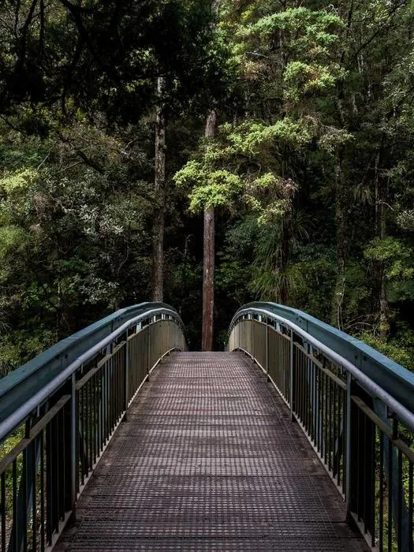

Photography · 3D
Jerrythepopper
洪 立 楷 ／ 影 像 作 品
Selected · 2018 — 2026
I love capturing people, streets and spaces through images.
And I love searching the many possibilities of the image for the look I love.
Photographer · 3D Creator · Based in Taipei. Brand collaborations with Hasselblad, Leica, Sony, Oppo, Giant, and more.
No. 01

01
Series · 001
Hasselblad
For my two collaborations with Hasselblad, I wanted to push what the camera could do.
View series →
No. 02

02
Series · 002
Portraits
Pictures of my friends, and the people who matter, the way they are.
View series →

No. 05

05
Series · 005
Nature
Nature keeps stunning me, so I do my best to keep a record of them.
View series →
No. 06

06
Series · 006
Film
The surprise of film is that I often forget the frame by the time it comes back.
View series →
No. 07
07
Series · 007
Taipei Wholesale Market
Lian-tng, the turning of wheels: a documentary project inside the Taipei First Wholesale Fruit and Vegetable Market.
View series →